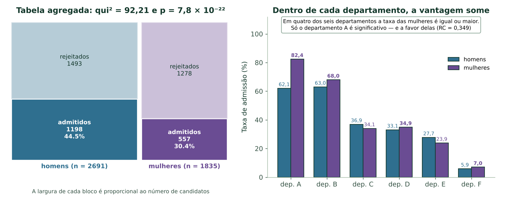
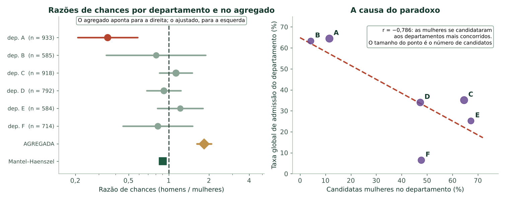

Qui-quadrado de independência
Testa se duas variáveis categóricas são independentes, comparando as frequências observadas com as que as margens da tabela preveem.
Comece por aqui
Duas variáveis categóricas, uma tabela de contingência, uma pergunta: elas são independentes? O teste qui-quadrado de independência responde com a mesma conta do teste de aderência — a diferença está em como as frequências esperadas são construídas. Esta ficha usa um exemplo em que a resposta correta depende inteiramente de qual tabela se analisa.
Na tabela agregada, a associação entre sexo e admissão é fortíssima: \(X^2=92{,}21\) com \(p=7{,}8\times10^{-22}\), e os homens são admitidos a 44,5% contra 30,4% das mulheres. Analisando departamento por departamento, a associação desaparece — e o único departamento significativo favorece as mulheres. É o paradoxo de Simpson, no seu exemplo mais conhecido.
O que é o teste
Sob independência, a probabilidade conjunta é o produto das marginais. Traduzindo para frequências: a célula \((i,j)\) deveria conter \(n_{i\cdot}n_{\cdot j}/n\) observações. O teste compara as frequências observadas com essas, exatamente como o teste de aderência — a única novidade é que os valores esperados são calculados a partir das próprias margens da tabela, o que custa graus de liberdade.

Os departamentos diferem muito em seletividade: A e B admitem mais de 63% dos candidatos, enquanto F admite 6,4%. E as candidaturas não se distribuem igualmente: os departamentos fáceis receberam 4% e 12% de candidatas, e os difíceis, cerca de 65%. A correlação entre a taxa de admissão do departamento e a proporção de candidatas é de −0,786. Ao somar tudo, a tabela agregada mede sobretudo onde cada grupo se candidatou, e não como foi tratado.
Pressupostos e como verificá-los
| Pressuposto | Por que importa | Como verificar |
|---|---|---|
| Observações independentes | Cada unidade contribui para uma única célula. | Delineamento; para dados pareados use McNemar. |
| Cada unidade em exatamente uma célula | A tabela tem de ser uma partição. | Definição das categorias. |
| Frequências esperadas suficientemente grandes | A aproximação é assintótica. | Nenhuma abaixo de 1, no máximo 20% abaixo de 5; o R avisa. Se falhar, use Fisher. |
| Contagens, não proporções | A conta precisa dos valores absolutos. | Use as frequências brutas. |
| Ausência de variáveis de confundimento relevantes | Uma terceira variável pode inverter a associação. | Estratifique e compare; teste de Breslow–Day. |
| Amostragem adequada | O teste vale para amostragem multinomial, de produto de multinomiais ou de Poisson. | Desenho do estudo. |
Nenhum teste de independência protege contra confundimento. A tabela agregada de Berkeley passa em todos os pressupostos técnicos — 4 526 observações, frequências esperadas acima de 700 — e ainda assim leva à conclusão oposta à correta. A proteção vem do desenho do estudo e do conhecimento do assunto, não da estatística.
Hipóteses e estatística de teste
Em que:
- \(r,\ c\)
- números de linhas e de colunas
- \(n_{i\cdot},\ n_{\cdot j}\)
- totais marginais da linha i e da coluna j
- \(E_{ij}\)
- frequência esperada sob independência
- \(V\)
- V de Cramér: 0,1 pequeno; 0,3 médio; 0,5 grande
- \(\text{RC}\)
- razão de chances, definida apenas em tabelas 2×2
Exemplo numérico, passo a passo
| Admitidos | Rejeitados | Total | Taxa | |
|---|---|---|---|---|
| Homens | 1 198 | 1 493 | 2 691 | 44,52% |
| Mulheres | 557 | 1 278 | 1 835 | 30,35% |
| Total | 1 755 | 2 771 | 4 526 | 38,78% |
A frequência esperada de homens admitidos é \(2\,691\times1\,755/4\,526=1\,043{,}46\). As quatro esperadas são 1 043,46, 1 647,54, 711,54 e 1 123,46.
Com \(\text{gl}=(2-1)(2-1)=1\), \(p=7{,}8\times10^{-22}\). Com a correção de continuidade de Yates, \(X^2=91{,}610\) e \(p=1{,}1\times10^{-21}\): nenhuma diferença prática.
Os resíduos padronizados são \(+4{,}78\), \(-3{,}81\), \(-5{,}79\) e \(+4{,}61\): há mais homens admitidos e mais mulheres rejeitadas do que a independência preveria.
A razão de chances é \((1198\times1278)/(1493\times557)=1{,}841\), com IC de 95% de \([1{,}625;\ 2{,}086]\). O V de Cramér é 0,143 — associação pequena, apesar do valor-p minúsculo, porque \(n\) é grande.
| Dep. | H adm. | H rej. | M adm. | M rej. | Taxa H | Taxa M | RC | X² | p |
|---|---|---|---|---|---|---|---|---|---|
| A | 512 | 313 | 89 | 19 | 62,06% | 82,41% | 0,349 | 17,248 | < 0,0001 |
| B | 353 | 207 | 17 | 8 | 63,04% | 68,00% | 0,803 | 0,254 | 0,6145 |
| C | 120 | 205 | 202 | 391 | 36,92% | 34,06% | 1,133 | 0,754 | 0,3854 |
| D | 138 | 279 | 131 | 244 | 33,09% | 34,93% | 0,921 | 0,298 | 0,5852 |
| E | 53 | 138 | 94 | 299 | 27,75% | 23,92% | 1,222 | 1,001 | 0,3171 |
| F | 22 | 351 | 24 | 317 | 5,90% | 7,04% | 0,828 | 0,384 | 0,5354 |
A razão de chances de Mantel–Haenszel, que combina os seis estratos, é 0,9047 — contra 1,841 na tabela agregada. A estatística de Mantel–Haenszel vale 1,427 com 1 grau de liberdade e \(p=0{,}232\): controlando o departamento, não há evidência de associação.
Propriedades
- Graus de liberdade \((r-1)(c-1)\): as margens são tomadas como dadas.
- Em tabelas 2×2, \(X^2=z^2\) do teste de duas proporções, e \(\sqrt{X^2/n}=|\phi|\), o coeficiente de correlação entre as duas variáveis binárias.
- A correção de Yates torna o teste mais conservador em tabelas 2×2; é o padrão do R e hoje muitos autores a consideram desnecessária.
- A razão de verossimilhanças \(G^2\) é assintoticamente equivalente e é a estatística natural dos modelos log-lineares.
- O teste detecta qualquer desvio de independência, sem informar a sua forma; os resíduos é que descrevem o padrão.
- Com \(n\) grande, desvios minúsculos tornam-se significativos: reporte sempre uma medida de associação.
Como interpretar os resultados
| Elemento | O que informa | Cuidado |
|---|---|---|
| X-squared e df | A estatística e os graus de liberdade. | gl = (r−1)(c−1). |
| p-value | Evidência contra a independência. | Não mede a força da associação. |
| expected | Frequências sob independência. | Confira se nenhuma é pequena demais. |
| stdres | Resíduos padronizados ajustados. | Acima de 2 em módulo indica a célula responsável. |
| V de Cramér | Força da associação, entre 0 e 1. | Com n grande, pode ser pequeno e o p minúsculo. |
| Razão de chances | Magnitude em tabelas 2×2. | Apresente com intervalo de confiança. |
| Mantel–Haenszel | Associação comum, controlando um estrato. | Compare com a da tabela agregada. |
- Verifique as frequências esperadas.
- Leia o valor-p e, ao lado dele, uma medida de associação.
- Examine os resíduos padronizados para descrever o padrão.
- Pergunte se existe uma terceira variável relevante e, se existir, estratifique.
- Compare a associação agregada com a de Mantel–Haenszel.
- Reporte X², gl, p, a medida de associação e, quando houver, a análise estratificada.
Como executar no R e em Python
Onde executar o código em Python
Não é preciso instalar nada: o Google Colab é um computador na nuvem, gratuito, que executa Python pelo navegador e já traz as bibliotecas usadas aqui (numpy, scipy e matplotlib).
chisq.test() está no pacote stats e aceita uma matriz ou uma tabela: em tabelas 2×2 aplica a correção de Yates por padrão, desligada com correct = FALSE. mantelhaen.test(), do mesmo pacote, faz a análise estratificada e devolve a razão de chances comum. DescTools fornece CramerV, OddsRatio, RelRisk e BreslowDayTest; vcd traz os gráficos de mosaico, que mostram os resíduos por cor. Para tabelas com frequências pequenas, fisher.test().
chisq.test(agregada, correct = FALSE)
mantelhaen.test(UCBAdmissions)
vcd::mosaic(agregada, shade = TRUE)
Exemplo de aplicação
Contexto dos dados
UCBAdmissions registra as 4 526 candidaturas à pós-graduação dos seis maiores departamentos da Universidade da Califórnia em Berkeley no outono de 1973, cruzando sexo, situação (admitido ou rejeitado) e departamento. Os dados foram publicados por Bickel, Hammel e O’Connell na Science em 1975, num artigo que se tornou a referência padrão sobre o paradoxo de Simpson.
Código em R
# Qui-quadrado de independência: exemplo completo ----
# Pacotes: stats (base), vcd (gráficos e medidas), DescTools
# install.packages(c("vcd", "DescTools"))
# 1. Dados: UCBAdmissions, admissões à pós-graduação em Berkeley (1973)
data(UCBAdmissions)
dimnames(UCBAdmissions)
agregada <- margin.table(UCBAdmissions, c(2, 1)) # sexo x situação
agregada
prop.table(agregada, 1) # taxas por sexo
# 2. O teste na tabela agregada
chisq.test(agregada) # com correção de Yates (padrão em 2x2)
chisq.test(agregada, correct = FALSE) # sem correção
teste <- chisq.test(agregada, correct = FALSE)
teste$expected # frequências esperadas
round(teste$residuals, 3) # resíduos de Pearson
round(teste$stdres, 3) # resíduos padronizados ajustados
# 3. Medidas de associação
library(DescTools)
CramerV(agregada, conf.level = 0.95)
Phi(agregada)
OddsRatio(agregada, conf.level = 0.95)
RelRisk(agregada, conf.level = 0.95)
fisher.test(agregada) # exato, para comparar
# 4. A MESMA pergunta, dentro de cada departamento
apply(UCBAdmissions, 3, function(t) {
tt <- t(t) # linhas = sexo
c(taxa_H = tt[1,1]/sum(tt[1,]), taxa_M = tt[2,1]/sum(tt[2,]),
RC = tt[1,1]*tt[2,2]/(tt[1,2]*tt[2,1]),
p = chisq.test(tt, correct = FALSE)$p.value)
})
# 5. A associação comum, controlando o departamento
mantelhaen.test(UCBAdmissions) # estatística e RC de Mantel-Haenszel
# teste de homogeneidade das razões de chances (Breslow-Day)
library(DescTools)
BreslowDayTest(UCBAdmissions)
# 6. A explicação: taxa de admissão do departamento x proporção de candidatas
taxa <- apply(UCBAdmissions, 3, function(t) sum(t["Admitted",]) / sum(t))
pmulh <- apply(UCBAdmissions, 3, function(t) sum(t[, "Female"]) / sum(t))
cbind(taxa_admissao = round(100*taxa, 2), perc_mulheres = round(100*pmulh, 2))
cor(taxa, pmulh)
# 7. Modelo log-linear, que generaliza o teste
longo <- as.data.frame(UCBAdmissions)
mod_ind <- glm(Freq ~ Gender + Admit, data = longo, family = poisson) # independência
mod_sat <- glm(Freq ~ Gender * Admit, data = longo, family = poisson) # saturado
anova(mod_ind, mod_sat, test = "Chisq") # equivale ao teste de independência
mod_dep <- glm(Freq ~ Dept * Gender + Dept * Admit, data = longo, family = poisson)
mod_tudo <- glm(Freq ~ Dept * Gender + Dept * Admit + Gender * Admit, data = longo, family = poisson)
anova(mod_dep, mod_tudo, test = "Chisq") # associação sexo-admissão, dado o depto
# 8. Gráficos
library(vcd)
mosaic(agregada, shade = TRUE, legend = TRUE)
mosaic(~ Gender + Admit | Dept, data = UCBAdmissions, shade = TRUE)
assoc(agregada, shade = TRUE)
A mesma análise em Python, com os resultados
Cole o código em um notebook do Google Colab ↗ e execute com Shift+Enter. Os valores abaixo são a saída desse código.
# Bibliotecas: numpy, scipy e matplotlib (já instaladas no Google Colab)
import numpy as np
from scipy import stats
# Dados: UCBAdmissions (R). Admissões à pós-graduação da Universidade da Califórnia
# em Berkeley, outono de 1973, nos seis maiores departamentos.
# Fonte: Bickel, Hammel e O'Connell (1975), Science 187:398-404.
dep = ["A", "B", "C", "D", "E", "F"]
# tabela[d] = [[homens admitidos, homens rejeitados], [mulheres admitidas, mulheres rejeitadas]]
tabela = {"A": [[512, 313], [ 89, 19]], "B": [[353, 207], [ 17, 8]],
"C": [[120, 205], [202, 391]], "D": [[138, 279], [131, 244]],
"E": [[ 53, 138], [ 94, 299]], "F": [[ 22, 351], [ 24, 317]]}
T = sum(np.array(tabela[d], float) for d in dep)
sexo = ["homens", "mulheres"]; sit = ["admitidos", "rejeitados"]
print("Tabela agregada dos seis departamentos")
print(f"{'':<10}{'admitidos':>11}{'rejeitados':>12}{'total':>9}{'taxa':>9}")
for i in range(2):
print(f"{sexo[i]:<10}{int(T[i,0]):11d}{int(T[i,1]):12d}{int(T[i].sum()):9d}"
f"{100*T[i,0]/T[i].sum():8.2f}%")
print(f"{'total':<10}{int(T[:,0].sum()):11d}{int(T[:,1].sum()):12d}{int(T.sum()):9d}"
f"{100*T[:,0].sum()/T.sum():8.2f}%")
# 1. O teste
qui, p, gl, esp = stats.chi2_contingency(T, correction=False)
quiy, py, _, _ = stats.chi2_contingency(T, correction=True)
print("\nFrequências esperadas sob independência (linha x coluna / total)")
for i in range(2):
print(f"{sexo[i]:<10}" + "".join(f"{esp[i,j]:11.2f}" for j in range(2)))
print(f"\nqui-quadrado sem correção = {qui:.4f} | gl = {gl} | p-valor = {p:.3e}")
print(f"qui-quadrado com correção de Yates = {quiy:.4f} | p-valor = {py:.3e}")
print(f"(o R aplica Yates por padrão em tabelas 2x2; use correct = FALSE para desligar)")
print(f"Menor frequência esperada = {esp.min():.2f}")
print("\nContribuição de cada célula e resíduos padronizados")
print(f"{'célula':<24}{'O':>7}{'E':>10}{'(O-E)²/E':>11}{'resíduo':>10}")
for i in range(2):
for j in range(2):
r = (T[i,j]-esp[i,j])/np.sqrt(esp[i,j])
print(f"{sexo[i]+' '+sit[j]:<24}{int(T[i,j]):7d}{esp[i,j]:10.2f}"
f"{(T[i,j]-esp[i,j])**2/esp[i,j]:11.4f}{r:10.3f}")
# 2. Medidas de associação
n = T.sum()
V = np.sqrt(qui / (n * (min(T.shape) - 1)))
orr = T[0,0]*T[1,1] / (T[0,1]*T[1,0])
ep_lor = np.sqrt(sum(1/T[i,j] for i in range(2) for j in range(2)))
print(f"\nV de Cramér = {V:.4f} (0,1 pequeno; 0,3 médio; 0,5 grande)")
print(f"phi = {np.sqrt(qui/n):.4f} (em tabelas 2x2 coincide com V)")
print(f"Razão de chances = {orr:.4f} | IC 95% = "
f"[{np.exp(np.log(orr)-1.96*ep_lor):.4f}; {np.exp(np.log(orr)+1.96*ep_lor):.4f}]")
print(f"Diferença de proporções = {100*(T[0,0]/T[0].sum() - T[1,0]/T[1].sum()):.2f} pontos percentuais")
print(f"Risco relativo = {(T[0,0]/T[0].sum())/(T[1,0]/T[1].sum()):.4f}")
print("\nTeste exato de Fisher, para comparação:")
od, pf = stats.fisher_exact(T.astype(int))
print(f" razão de chances condicional = {od:.4f} | p-valor = {pf:.3e}")
print("Com n = 4526 o exato e a aproximação coincidem; o exato é para amostras pequenas.")
# 3. A mesma análise, departamento por departamento
print("\n" + "=" * 70)
print("A MESMA pergunta, dentro de cada departamento")
print(f"{'dep':<5}{'H adm.':>8}{'H rej.':>8}{'M adm.':>8}{'M rej.':>8}"
f"{'taxa H':>9}{'taxa M':>9}{'RC':>8}{'qui²':>9}{'p':>9}")
ors = []
for d in dep:
t = np.array(tabela[d], float)
q, pp, g, e = stats.chi2_contingency(t, correction=False)
o = t[0,0]*t[1,1]/(t[0,1]*t[1,0]); ors.append(o)
print(f"{d:<5}{int(t[0,0]):8d}{int(t[0,1]):8d}{int(t[1,0]):8d}{int(t[1,1]):8d}"
f"{100*t[0,0]/t[0].sum():8.2f}%{100*t[1,0]/t[1].sum():8.2f}%{o:8.3f}{q:9.3f}{pp:9.4f}")
print("\nSó o departamento A é significativo - e a FAVOR das mulheres (RC = 0,349:")
print("a chance de admissão de um homem é 0,35 vez a de uma mulher).")
# 4. Mantel-Haenszel: a associação comum, controlando o departamento
num = sum(np.array(tabela[d],float)[0,0]*np.array(tabela[d],float)[1,1]/np.array(tabela[d],float).sum() for d in dep)
den = sum(np.array(tabela[d],float)[0,1]*np.array(tabela[d],float)[1,0]/np.array(tabela[d],float).sum() for d in dep)
print(f"\nRazão de chances de Mantel-Haenszel = {num/den:.4f}")
print(f"contra {orr:.4f} na tabela agregada. O sinal da associação se INVERTE.")
# estatística de Mantel-Haenszel
a = np.array([np.array(tabela[d],float)[0,0] for d in dep])
Ea = np.array([np.array(tabela[d],float)[0].sum()*np.array(tabela[d],float)[:,0].sum()/np.array(tabela[d],float).sum() for d in dep])
Va = np.array([np.prod([np.array(tabela[d],float)[0].sum(), np.array(tabela[d],float)[1].sum(),
np.array(tabela[d],float)[:,0].sum(), np.array(tabela[d],float)[:,1].sum()]) /
(np.array(tabela[d],float).sum()**2*(np.array(tabela[d],float).sum()-1)) for d in dep])
mh = (abs(a.sum()-Ea.sum())-0.5)**2/Va.sum()
print(f"Estatística de Mantel-Haenszel = {mh:.4f} | gl = 1 | p-valor = {stats.chi2.sf(mh,1):.4f}")
print("Controlando o departamento, não há evidência de associação entre sexo e admissão.")
# 5. Por que a agregação engana
print("\n" + "=" * 70)
print("A explicação do paradoxo: as mulheres se candidataram aos departamentos")
print("mais concorridos.")
print(f"{'dep':<5}{'taxa global de admissão':>26}{'% de candidatas mulheres':>27}")
for d in dep:
t = np.array(tabela[d], float)
print(f"{d:<5}{100*(t[0,0]+t[1,0])/t.sum():25.2f}%{100*t[1].sum()/t.sum():26.2f}%")
taxa = np.array([(np.array(tabela[d],float)[0,0]+np.array(tabela[d],float)[1,0])/np.array(tabela[d],float).sum() for d in dep])
pmul = np.array([np.array(tabela[d],float)[1].sum()/np.array(tabela[d],float).sum() for d in dep])
print(f"\nCorrelação entre a taxa de admissão do departamento e a proporção de")
print(f"candidatas mulheres: r = {np.corrcoef(taxa, pmul)[0,1]:.4f}")
print("Os departamentos fáceis (A e B, com mais de 63% de admissão) receberam")
print("4% e 12% de candidatas; os difíceis (C e E, com 25% a 35%), cerca de 65%.")
print("\nO que aconteceria se as mulheres tivessem a MESMA distribuição de candidaturas")
print("que os homens, mantendo as taxas de admissão observadas em cada departamento:")
nh = np.array([np.array(tabela[d],float)[0].sum() for d in dep])
tm = np.array([np.array(tabela[d],float)[1,0]/np.array(tabela[d],float)[1].sum() for d in dep])
nm_total = T[1].sum()
esperadas = (nh/nh.sum()*nm_total*tm).sum()
print(f" mulheres admitidas: {esperadas:.1f} de {nm_total:.0f} = {100*esperadas/nm_total:.2f}%")
print(f" contra os {100*T[1,0]/T[1].sum():.2f}% observados e os {100*T[0,0]/T[0].sum():.2f}% dos homens.")
print("A diferença agregada não só desaparece como se inverte: padronizada pela")
print("distribuição de candidaturas dos homens, a taxa feminina passa a ser a maior.")
Resultados da execução
Tabela agregada dos seis departamentos
admitidos rejeitados total taxa
homens 1198 1493 2691 44.52%
mulheres 557 1278 1835 30.35%
total 1755 2771 4526 38.78%
Frequências esperadas sob independência (linha x coluna / total)
homens 1043.46 1647.54
mulheres 711.54 1123.46
qui-quadrado sem correção = 92.2053 | gl = 1 | p-valor = 7.814e-22
qui-quadrado com correção de Yates = 91.6096 | p-valor = 1.056e-21
(o R aplica Yates por padrão em tabelas 2x2; use correct = FALSE para desligar)
Menor frequência esperada = 711.54
Contribuição de cada célula e resíduos padronizados
célula O E (O-E)²/E resíduo
homens admitidos 1198 1043.46 22.8875 4.784
homens rejeitados 1493 1647.54 14.4957 -3.807
mulheres admitidos 557 711.54 33.5642 -5.793
mulheres rejeitados 1278 1123.46 21.2578 4.611
V de Cramér = 0.1427 (0,1 pequeno; 0,3 médio; 0,5 grande)
phi = 0.1427 (em tabelas 2x2 coincide com V)
Razão de chances = 1.8411 | IC 95% = [1.6244; 2.0867]
Diferença de proporções = 14.16 pontos percentuais
Risco relativo = 1.4666
Teste exato de Fisher, para comparação:
razão de chances condicional = 1.8411 | p-valor = 4.836e-22
Com n = 4526 o exato e a aproximação coincidem; o exato é para amostras pequenas.
======================================================================
A MESMA pergunta, dentro de cada departamento
dep H adm. H rej. M adm. M rej. taxa H taxa M RC qui² p
A 512 313 89 19 62.06% 82.41% 0.349 17.248 0.0000
B 353 207 17 8 63.04% 68.00% 0.803 0.254 0.6145
C 120 205 202 391 36.92% 34.06% 1.133 0.754 0.3854
D 138 279 131 244 33.09% 34.93% 0.921 0.298 0.5852
E 53 138 94 299 27.75% 23.92% 1.222 1.001 0.3171
F 22 351 24 317 5.90% 7.04% 0.828 0.384 0.5354
Só o departamento A é significativo - e a FAVOR das mulheres (RC = 0,349:
a chance de admissão de um homem é 0,35 vez a de uma mulher).
Razão de chances de Mantel-Haenszel = 0.9047
contra 1.8411 na tabela agregada. O sinal da associação se INVERTE.
Estatística de Mantel-Haenszel = 1.4269 | gl = 1 | p-valor = 0.2323
Controlando o departamento, não há evidência de associação entre sexo e admissão.
======================================================================
A explicação do paradoxo: as mulheres se candidataram aos departamentos
mais concorridos.
dep taxa global de admissão % de candidatas mulheres
A 64.42% 11.58%
B 63.25% 4.27%
C 35.08% 64.60%
D 33.96% 47.35%
E 25.17% 67.29%
F 6.44% 47.76%
Correlação entre a taxa de admissão do departamento e a proporção de
candidatas mulheres: r = -0.7858
Os departamentos fáceis (A e B, com mais de 63% de admissão) receberam
4% e 12% de candidatas; os difíceis (C e E, com 25% a 35%), cerca de 65%.
O que aconteceria se as mulheres tivessem a MESMA distribuição de candidaturas
que os homens, mantendo as taxas de admissão observadas em cada departamento:
mulheres admitidas: 947.1 de 1835 = 51.62%
contra os 30.35% observados e os 44.52% dos homens.
A diferença agregada não só desaparece como se inverte: padronizada pela
distribuição de candidaturas dos homens, a taxa feminina passa a ser a maior.
| Elemento | Valor | Leitura |
|---|---|---|
| X² sem correção | 92,205; gl = 1; p = 7,8 × 10⁻²² | Associação fortíssima. |
| X² com correção de Yates | 91,610; p = 1,1 × 10⁻²¹ | Praticamente idêntico. |
| Menor frequência esperada | 711,54 | Muito acima de 5. |
| Taxa de admissão | 44,52% (homens) contra 30,35% (mulheres) | Diferença de 14,17 pontos. |
| Razão de chances | 1,8411; IC 95% [1,625; 2,086] | Favorece os homens. |
| Risco relativo | 1,4669 | — |
| V de Cramér | 0,1427 | Associação pequena, apesar do p. |
| Resíduos padronizados | +4,78 / −3,81 / −5,79 / +4,61 | Padrão coerente. |
| Teste exato de Fisher | RC = 1,8408; p = 7,0 × 10⁻²² | Coincide com a aproximação. |
| Elemento | Valor | Leitura |
|---|---|---|
| RC de Mantel–Haenszel | 0,9047 | O sinal se inverte. |
| Estatística de Mantel–Haenszel | 1,4269; gl = 1; p = 0,2323 | Sem evidência de associação. |
| Departamentos significativos | apenas o A | RC = 0,349, favorecendo as mulheres. |
| Departamentos com taxa feminina maior | A, B, D e F | Quatro dos seis. |
| Correlação entre seletividade e proporção de candidatas | r = −0,786 | A causa do paradoxo. |
| Taxa feminina padronizada | 51,62% | Contra 44,52% dos homens. |
Leitura: a tabela agregada mostra uma diferença grande e altamente significativa a favor dos homens. A análise estratificada mostra que ela não existe. Os seis departamentos têm razões de chances entre 0,35 e 1,22, cinco dos quais com intervalos que contêm 1; o único significativo, o departamento A, favorece as mulheres de forma acentuada — a chance de admissão de um homem ali é 0,35 vez a de uma mulher.
A explicação está na terceira variável. Os departamentos A e B admitiam mais de 63% dos candidatos e receberam, respectivamente, 11,6% e 4,3% de candidatas. Os departamentos C e E admitiam entre 25% e 35% e receberam cerca de 65% de candidatas. As mulheres se candidataram, em proporção muito maior, aos programas mais concorridos. A tabela agregada mede essa escolha de programa, não o tratamento recebido em cada um.
A padronização torna o ponto concreto: se as mulheres tivessem se distribuído entre os departamentos como os homens se distribuíram, mantendo as taxas de admissão femininas observadas em cada um, a taxa global feminina seria de 51,62% — acima dos 44,52% dos homens. A diferença agregada não apenas desaparece: ela se inverte.
O que isso ensina sobre o teste
O teste qui-quadrado fez exatamente o que deveria fazer. Ele respondeu, com precisão, à pergunta "nesta tabela, sexo e admissão são independentes?" — e a resposta é não. O erro não está no teste; está em tomar a resposta dessa pergunta como resposta de outra, "houve discriminação por sexo no processo de admissão?".
Nenhum pressuposto técnico foi violado: a amostra tem 4 526 observações e as frequências esperadas passam de 700. O problema é de identificação, não de aproximação assintótica, e por isso nenhuma verificação estatística o detectaria. O que o detecta é a pergunta "existe alguma variável que afeta tanto a exposição quanto o desfecho?" — e essa pergunta vem do conhecimento do assunto.
O mesmo fenômeno aparece em escala contínua na ficha da MANCOVA, em que a correlação entre produtividade e proteína é positiva no conjunto e negativa dentro de cada estrato. O remédio é o mesmo nos dois casos: estratificar, ou incluir a variável de confundimento no modelo.
Erros comuns
| Erro | Como evitar |
|---|---|
| Interpretar associação como causa | O teste mede associação na tabela analisada, nada mais. |
| Analisar só a tabela agregada | Pergunte sempre se há uma terceira variável relevante. |
| Reportar só o valor-p | Com n grande, qualquer desvio é significativo; informe V de Cramér ou a razão de chances. |
| Aplicar a proporções ou percentagens | O teste precisa das contagens. |
| Usar com dados pareados | Para o mesmo indivíduo medido duas vezes, McNemar. |
| Ignorar o aviso de esperados pequenos | Use Fisher ou agrupe categorias. |
| Fazer muitos testes 2×2 numa tabela grande sem ajuste | Use resíduos padronizados ou ajuste os valores-p. |
| Calcular a razão de chances em tabelas maiores que 2×2 | Ela só é definida em 2×2; use o V de Cramér. |
Alternativas e fluxo de trabalho
| Procedimento | Quando preferir |
|---|---|
| Teste exato de Fisher | Frequências esperadas pequenas; tabelas 2×2. |
| Teste de McNemar | Dados pareados. |
| Mantel–Haenszel | Tabelas 2×2 estratificadas por uma terceira variável. |
| Teste de Breslow–Day | Para verificar se as razões de chances são homogêneas entre os estratos. |
| Razão de verossimilhanças G² | Equivalente; natural em modelos log-lineares. |
| Modelo log-linear | Três ou mais variáveis categóricas, com estrutura a modelar. |
| Regressão logística | Uma resposta binária com vários preditores, inclusive contínuos. |
| Teste de tendência de Cochran–Armitage | Uma das variáveis é ordinal. |
- Monte a tabela de contingência com as contagens.
- Confira as frequências esperadas.
- Aplique o teste e reporte X², gl e valor-p.
- Calcule uma medida de associação e, em 2×2, a razão de chances com intervalo.
- Examine os resíduos padronizados.
- Identifique possíveis variáveis de confundimento e estratifique.
- Compare a associação agregada com a estratificada antes de concluir.
Referências desta ficha
- PEARSON, Karl. On the criterion that a given system of deviations from the probable in the case of a correlated system of variables is such that it can be reasonably supposed to have arisen from random sampling. Philosophical Magazine, Series 5, v. 50, n. 302, p. 157-175, 1900.
- YATES, Frank. Contingency tables involving small numbers and the chi-square test. Supplement to the Journal of the Royal Statistical Society, v. 1, n. 2, p. 217-235, 1934.
- SIMPSON, Edward H. The interpretation of interaction in contingency tables. Journal of the Royal Statistical Society, Series B, v. 13, n. 2, p. 238-241, 1951.
- BICKEL, Peter J.; HAMMEL, Eugene A.; O’CONNELL, J. William. Sex bias in graduate admissions: data from Berkeley. Science, v. 187, n. 4175, p. 398-404, 1975. (Fonte dos dados
UCBAdmissions.) - MANTEL, Nathan; HAENSZEL, William. Statistical aspects of the analysis of data from retrospective studies of disease. Journal of the National Cancer Institute, v. 22, n. 4, p. 719-748, 1959.
- BRESLOW, Norman E.; DAY, Nicholas E. Statistical methods in cancer research, volume I: the analysis of case-control studies. Lyon: IARC, 1980.
- CRAMÉR, Harald. Mathematical methods of statistics. Princeton: Princeton University Press, 1946.
- PEARL, Judea. Causality: models, reasoning, and inference. 2. ed. Cambridge: Cambridge University Press, 2009.
- AGRESTI, Alan. Categorical data analysis. 3. ed. Hoboken: Wiley, 2013.
- AGRESTI, Alan. An introduction to categorical data analysis. 3. ed. Hoboken: Wiley, 2019.
- FLEISS, Joseph L.; LEVIN, Bruce; PAIK, Myunghee Cho. Statistical methods for rates and proportions. 3. ed. Hoboken: Wiley, 2003.
- R CORE TEAM. R: a language and environment for statistical computing. Vienna: R Foundation for Statistical Computing, 2026. Disponível em: https://www.r-project.org/. (Funções
chisq.test,mantelhaen.testefisher.test, pacotestats.) - MEYER, David; ZEILEIS, Achim; HORNIK, Kurt. The strucplot framework: visualizing multi-way contingency tables with vcd. Journal of Statistical Software, v. 17, n. 3, p. 1-48, 2006. (Pacote
vcd.) - SIGNORELL, Andri et al. DescTools: tools for descriptive statistics. R package. Disponível em: https://CRAN.R-project.org/package=DescTools.
- POSIT TEAM. RStudio: integrated development environment for R. Boston: Posit Software, PBC. Disponível em: https://posit.co/download/rstudio-desktop/.
- VIRTANEN, Pauli et al. SciPy 1.0: fundamental algorithms for scientific computing in Python. Nature Methods, v. 17, p. 261-272, 2020. DOI: 10.1038/s41592-019-0686-2. (Funções do módulo
scipy.stats.) - HARRIS, Charles R. et al. Array programming with NumPy. Nature, v. 585, p. 357-362, 2020. DOI: 10.1038/s41586-020-2649-2.
- HUNTER, John D. Matplotlib: a 2D graphics environment. Computing in Science & Engineering, v. 9, n. 3, p. 90-95, 2007.
- GOOGLE. Google Colaboratory. Disponível em: https://colab.research.google.com/.
- As figuras desta ficha foram elaboradas pelo autor.

Prof. Dr. Cássius Henrique Xavier Oliveira
Professor · ICTIN/UFLA · Estatística, Confiabilidade e Ciência de Dados.
Conheça minha trajetória e projetos →